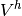
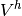

Large sliding/large deformation contact with friction bricks¶
The basic tools to deal with large sliding/large deformation contact of deformable structures are accessible in the weak form language. Some interpolate transformations (see Interpolate transformations) are defined to perform the contact detection and allow to integrate from a contacct bondary to the opposite contact boundary. Some other useful tools such as the unit normal vector in the real configuration and projections to take into account contact with Coulomb friction are also defined as operators in the weak form language.
Of course, the computational cost of large sliding/large deformation contact algorithms is greatly higher than small sliding-small deformation ones.
Raytracing interpolate transformation¶
In order to incorporate the contact detection in the high-level generic assembly, a specific interpolate transformation has been defined (see Interpolate transformations for more explanations on interpolate tranformations). It is based on a raytracing contact detection has described in [KO-RE2014] and uses the criteria described below. The interpolate transformation stores the different potential contact surfaces. On most of methods, potential contact surface are classified into two categories: master and slave surface (see figure).
The slave surface is the “contactor” and the master one the “target”. Rigid obstacle are also considered. They are always master surfaces. The basic rule is that the contact is considered between a slave surface and a master one. However, the multi-contact frame object and the GetFEM++ bricks allow multi-contact situations, including contact between two master surfaces, self-contact of a master surface and an arbitrary number of slave and master surfaces.
Basically, in order to detect the contact pairs, Gauss points or f.e.m. nodes of slave surfaces are projected on master surfaces (see figure). If self-contact is considered, Gauss points or f.e.m. nodes of master surface are also projected on master surfaces.
The addition of a raytracing transformation to a model:
void add_raytracing_transformation(model &md, const std::string &transname,
scalar_type d)
where transname is a name given to the transformation which allows to refer to it in the weak form language and d is the release distance (see above).
The raytracing transformation is added without any slave or master contact boundary. The following functions allows to add some boundaries to the transformation:
add_master_contact_boundary_to_raytracing_transformation(model &md,
const std::string &transname, const mesh &m,
const std::string &dispname, size_type region)
add_slave_contact_boundary_to_raytracing_transformation(model &md,
const std::string &transname, const mesh &m,
const std::string &dispname, size_type region)
where dispname is the variable name which represent the displacement on that contact boundary. The difference between master and slave contact boundary is that the contact detection is to be performed starting from a slave or master boundary toward a master boundary. The contact detection is not performed toward a slave boundary. Consequently, only the influence boxes of the elements of the master surfaces are computed and stored.
It is also possible to add a rigid obstacle (considered as a master surface) thanks to the function:
add_rigid_obstacle_to_raytracing_transformation(model &md,
const std::string &transname,
const std::string &expr, size_type N)
where expr is the expression of a signed distance to the obstacle using the syntax of the weak form language (X being the current position, X(0), X(1) ... the corresponding components). For instance an expression X(0) + 5 will correspond to a flat obstacle lying on the right of the position -5 of the first coordinate. Be aware that the expression have to be close to a signed distance, which in particular means that the gradient norm have to be close to 1.
In order to distinguish between non-contact situations and the occurence of a contact with another deformable body or with a rigid obstacle, the transformation returns an integer identifiant which can be used by the Interpolate_filter command of the weak form language (see Interpolate transformations). The different values:
- 0 : no contact found on this Gauss point
- 1 : contact occurs on this Gauss point with a deformable body
- 2 : contact occurs on this Gauss point with a rigid obstacle.
such that it is possible to differentiate the treatment of these three cases using:
Interpolate_filter(transname, expr1, 0)
Interpolate_filter(transname, expr2, 1)
Interpolate_filter(transname, expr3, 2)
in the weak form language, where expr1, expr2 and expr3 correspond to the different terms to be computed. The matlab interface demo program /interface/tests/matlab/demo_large_sliding_contact.m presents an example of use.
Note that the transformation could also be directly used with a ga_workspace object if model object are not used. See getfem/getfem_contact_and_friction_common.h for more details. Note also that in the framework of the model object, a interfaced use of this transformation is allowed by the model bricks described below.
The contact pair detection algorithm¶
A contact pair is formed by a point of a slave (or master in case of self-contact) surface and a projected point on the nearest master surface (or rigid obstacle). The Algorithm used is summerized in figure
It is impossible to distinguish without fail between valid and invalid contact situations without a global topological criterion (such as in [Pantz2008]), a fortiori for self-contact detection. However, this kind of criterion can be very costly to implement. Thus, one generally implements some simple heuristic criteria which cannot cover all the possible cases. We present such a set of criteria here. They are of course perfectible and subject to change. First, in figure one can see a certain number of situations of valid or invalid contact that criteria have to distinguish.
Some details on the algorithm:
- Computation of influence boxes. The influence box of an element is just an offset to its bounding box at a distance equal to the release distance. If this strategy is used, the release distance should not be too large compared to the element size. Otherwise, a point would correspond to a a large number of influence box which can considerably slow down the search of contact pairs. The influence boxes are stored in a region tree object in order to find the boxes containing a point with an algorithm having a mean complexity in .
- What is a potential contact pair. A potential contact pair is a pair slave point - master element face which will be investigated. The projection of the slave point on the master surface will be done and criteria will be applied.
- Projection algorithm. The projection of the slave point onto a master element face is done by a parametrization of the surface on the reference element via the geometric transformation and the displacement field. During the projection, no constraint is applied to remain inside the element face, which means that the element face is prolongated analytically. The projection is performed by minimizing the distance between the slave point and the projected one using the parametrization and Newton’s and/or BFGS algorithms. If raytrace is set to true, then no projection is computed. Instead a ray tracing from the point x in the direction of the unit normal vector at x to find y. This means the reverse of the usual situation (x will be the projection of y).
The list of criteria:
- Criterion 1: the unit normal cone/vector should be compatible, and the two points do not share the same element. Two unit normal vector are compatible if their scalar product are non-positive. In case of f.e.m. node contact, since a fem node is shared generally by several elements, a normal cone constituted of the unit normal vectors of each element is considered. Two normal cones are compatible if at least one pair of unit normal vector have their scalar product non-positive. In order to simplify the computation, a normal cone is reduced to a mean normal vector if the solid angle of the normal cone is less than cut_angle a parameter of the multi-contact frame object. This criterion allows to treat cases (B) and (K1).
- Criterion 2: the contact pair is eliminated when the search of the projection/raytrace point do not converge. When Newton’s algorithms (and BFGS one for projection) used to compute the projection/raytrace of the slave point on the master element surface fails to converge, the pair is not considered. A warning is generated.
- Criterion 3 : the projected point should be inside the element. The slave point is projected on the surface of the master element without the constraint to remain inside the face (which means that the face is prolongated). If the orthogonal projection is outside the face, the pair is not considered. This is the present state, however, to treat case (J3) an aditional treatment will have to be considered (projection on the face with the constraint to remain inside it and test of the normal cone at this point) This criterion allows to treat cases (F2), (K2), (M1) and (M2).
- Criterion 4 : the release distance is applied. If the distance between the slave point and its projection on the master surface is greater than the release distance, the contact pair is not considered. This can treat cases (C), (E), (F1), (G), (H) if the release distance is adapted and the deformation not too important.
- Criterion 5 : comparison with rigid obstacles. If the signed distance between the slave point and its projection on the master surface is greater than the one with a rigid obstacle (considering that the release distance is also first applied to rigid obstacle) then the contact pair is not considered.
- Criterion 6 : for self-contact only : apply a test on unit normals in reference configuration. In case of self contact, a contact pair is eliminated when the slave point and the master element belong to the same mesh and if the slave point is behind the master surface (with respect to its unit outward normal vector) and not four times farther than the release distance. This can treat cases (A), (C), (D), (H).
- Criterion 7 : smallest signed distance on contact pairs. Between the retained contact pairs (or rigid obstacle) the one corresponding to the smallest signed distance is retained.
Nodal contact brick with projection¶
Notations: denotes the reference configuration of a deformable body, possibly constituted by several unconnected parts (see figure).  is the deformed configuration and is the approximated deformation on a finite element space . The displacement is defined by . A generic point of the reference configuration
is the deformed configuration and is the approximated deformation on a finite element space . The displacement is defined by . A generic point of the reference configuration  is denoted by
is denoted by  while the corresponding point of the deformed configuration is denoted by . denotes a slave boundary of and a master one. The corresponding boundaries on the deformed configuration are
while the corresponding point of the deformed configuration is denoted by . denotes a slave boundary of and a master one. The corresponding boundaries on the deformed configuration are  and , respectively. The outward unit normal vector to the boundary (in the deformed configuration) at a point of that boundary is denoted by . Finally, the notation denotes the directional derivative of the quantity
and , respectively. The outward unit normal vector to the boundary (in the deformed configuration) at a point of that boundary is denoted by . Finally, the notation denotes the directional derivative of the quantity  with respect to the deformation and in the direction
with respect to the deformation and in the direction  . Similarly, The notation is the second derivative in the directions and .
. Similarly, The notation is the second derivative in the directions and .
Let be the potential energy of the system, without taking into account contact and friction contributions. Typically, it includes elastic and external load potential energy. Let for the set of finite element nodes on the slave boundary in the reference configuration. Let for  be the contact nodes in potential contact with the master surface of a deformable body. Let for be the contact nodes in potential contact with a rigid obstacle.
be the contact nodes in potential contact with the master surface of a deformable body. Let for be the contact nodes in potential contact with a rigid obstacle.
We denote by the corresponding node on the deformed configuration and the projection on the master surface (or rigid obstacle) on the deformed configuration. Let the point on the master surface verifying . This allows to define the normal gap as
where is the outward unit normal vector of the master surface at .
Considering only stationnary rigid obstacles and applying the principle of Alart-Curnier augmented Lagrangian [AL-CU1991], the problem with nodal contact with friction condition can be expressed as follows in an unsymmetric version (see [renard2013] for the linear elasticity case)
![\left\{\begin{array}{l}
\mbox{Find } \varphi^h \in V^h \mbox{ such that } \\
\displaystyle \delta J(\varphi^h)[\delta u^h] - \sum_{i \in I_{\text{def}}} \lambda_i \cdot (\delta u^h(X_i) - \delta u^h(Y_i)) - \sum_{i \in I_{\text{rig}}} \lambda_i \delta u^h(X_i) = 0 ~~~ \forall \delta u^h \in V^h, \\
\displaystyle \Frac{1}{r} \left[\lambda_i + P_{n_y, {\mathscr F}}(\lambda_i + r\left(g_i n_y - \alpha(\varphi^h(X_i) - \varphi^h(Y_i) - W_T(X_i)+W_T(Y_i)))\right)\right]= 0 ~~\forall i \in I_{\text{def}}, \\[1em]
\displaystyle \Frac{1}{r} \left[\lambda_i + P_{n_y, {\mathscr F}}(\lambda_i + r\left(g_i n_y - \alpha(\varphi^h(X_i) - W_T(X_i)))\right)\right]= 0 ~~\forall i \in I_{\text{rig}},
\end{array}\right.](../_images/math/339dd534c2790d2c0c2648702925a078525fc604.png)
where  ... + tangent system
... + tangent system
Sorry, for the moment the brick is not working.
Tools of the high-level generic assembly for contact with friction¶
The following nonlinear operators are defined in the weak form language (see Compute arbitrary terms - high-level generic assembly procedures):
Transformed_unit_vector(Grad_u, n) where Grad_u is the gradient of a displacement field and n a unit vector in the reference configuration. This nonlinear operator corresponds to
with the following partial derivatives
Coulomb_friction_coupled_projection(lambda, n, Vs, g, f, r) where lambda is the contact force, n is a unit normal vector, Vs is the sliding velocity, g is the gap, f the friction coefficient and r a positive augmentation parameter. The expression of the operator is
where is the negative part () and are the three components of the friction coefficient. Note that the components are optional. If a scalar fiction coefficient is given (only ) then this corresponds to the classical Coulomb friction law. If a vector of two components is given (only ) then this corresponds to a Coulomb friction with a given threshold. Finally, if a vector of three components is given, the friction law correspongs to the expression of
given above.
The expression refers to the orthogonal projection (this is link to the return mapping algorithm) on the tangential ball (with respect to
of radius
The derivatives can be expressed as follows with and :
![\partial_q P_{B(n,\tau)}(q) =
\left\{\begin{array}{cl}
0 & \mbox{for } \tau \le 0 \\
\mathbf{T}_n & \mbox{for } \|q_{_T}\| \le \tau \\
\Frac{\tau}{\|q_{_T}\|}
\left(\mathbf{T}_n - \Frac{q_{_T}}{\|q_{_T}\|}\otimes \Frac{q_{_T}}{\|q_{_T}\|}
\right) & \mbox{otherwise }
\end{array} \right.
\partial_{\tau} P_{B(n,\tau)}(q) =
\left\{\begin{array}{cl}
0 & \mbox{for } \tau \le 0 \mbox{ or } \|q_{_T}\| \le \tau \\
\Frac{q_{_T}}{\|q_{_T}\|} & \mbox{otherwise}
\end{array} \right.
\partial_n P_{B(n,\tau)}(q) =
\left\{
\begin{array}{cl}
0 & \mbox{for } \tau \le 0 \\
-q \cdot n~\mathbf{T}_n - n \otimes q_{_T}
& \mbox{for } \|q_{_T}\| \le \tau \\
-\Frac{\tau}{\|q_{_T}\|}
\left( q \cdot n
\left(\mathbf{T}_n - \Frac{q_{_T}}{\|q_{_T}\|}\otimes \Frac{q_{_T}}{\|q_{_T}\|}
\right)
+ n \otimes q_{_T}
\right) & \mbox{otherwise.}
\end{array} \right.
\partial_{\lambda} P(\lambda, n, V_s, g, f, r) = \partial_q P_{B(n,\tau)}
+\partial_{\tau}P_{B(n,\tau)} \otimes \partial_{\lambda} \tau
+H(-\lambda\cdot n - r\,g)~n \otimes n,
\partial_{n} P(\lambda, n, V_s, g, f, r) =
\left|\begin{array}{l} \partial_n P_{B(n,\tau)}
+\partial_{\tau} P_{B(n,\tau)} \otimes \partial_n \tau \\
\hspace*{3em}+H(-\lambda\cdot n - r\,g) ~
\left(n \otimes \lambda -
(2~\lambda\cdot n + r\,g)~n \otimes n +
(\lambda\cdot n + r\,g)~\mathbf{I}\right),
\end{array}\right.
\partial_{g} P(\lambda, n, V_s, g, f, r) =
\partial_{\tau} P_{B(n,\tau)} ~ \partial_g \tau
+H(-\lambda\cdot n - r\,g)~r~n
\partial_{f} P(\lambda, n, V_s, g, f, r) =
\partial_{\tau} P_{B(n,\tau)} \partial_{f} \tau
\partial_{r} P(\lambda, n, V_s, g, f, r) =
H(-\lambda\cdot n - r\,g)gn + \partial_q P_{B(n,\tau)}V_s
+\partial_{\tau} P_{B(n,\tau)} \partial_r \tau](../_images/math/6762aa7e32e10100487b327d5ba97aba0f48c6f6.png)
{kind=link}
{kind=link}
{kind=link}
{kind=link}
Integral contact brick with raytrace¶
Add of the brick:
indbrick = add_integral_large_sliding_contact_brick_raytracing
(model &md, const std::string &dataname_r,
scalar_type release_distance,
const std::string &dataname_friction_coeff = "0",
const std::string &dataname_alpha = "1");
This brick allows to deal with a multi-contact situation. It adds to the model a raytracing interpolate transformation as described in a previous section whose name can be obtained by the command:
const std::string &transformation_name_of_large_sliding_contact_brick(model &md,
size_type indbrick);
Once the brick is added to the model, the master and slave contact boundaries have to be added with the following function:
add_contact_boundary_to_large_sliding_contact_brick(model &md,
size_type indbrick, const mesh_im &mim, size_type region,
bool is_master, bool is_slave, const std::string &u,
const std::string &lambda = "", const std::string &w = "",
bool frame_indifferent = false)
where region should be a valid mesh region number representing a boundary, is_master should be set to true if the contact detection is to be done on that contact boundary, is_slave should be set to true if the integration of contact terms is to be done on that boundary. Note that a contact boundary is allowed to be both master and slave, in particular to allow self-contact detection. u is the displacement variable. If is_slave is set to true, lambda should describe a multiplier variable with degrees of freedom on the contact boundary (typically added to the model with the md.add_filtered_fem_variable(...) method). Pure master contact boundary do not need the definition of a multiplier. Additionally, ``w is for the evolutionnary case and represents the displacement at the previous time step.
A rigid obstacle can be added to the brick with:
add_rigid_obstacle_to_large_sliding_contact_brick(model &md,
size_type indbrick, std::string expr, size_type N)
where expr is an expression using the weak form language (with X is the current position) which should be a signed distance to the obstacle. N is the mesh dimension.

目次
前のトピックへ
Small sliding contact with friction bricks
次のトピックへ
Numerical continuation and bifurcation
Download
Main documentations
- GetFEM++ User documentation
- Python Interface
- Matlab Interface
- Scilab Interface
- Gmm++
- GetFEM++ project